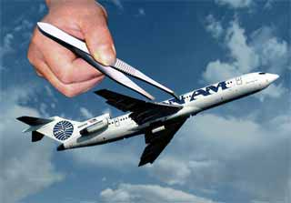

|

Terrorism, tweezers and terminal madness
Some thoughts about the absurdity of too much security..
- - - - - - - - - -
by Patrick Smith
 N A SUNDAY MORNING I'm catching Malaysia Airlines flight MH091 from Newark to Dubai, and eventually onward to Kuala Lumpur. Newark, now cloyingly recast as Liberty International Airport, is forever the same old bowl of concrete and cars. In a cheerless restaurant in Terminal B I'm eating breakfast beneath framed pictures of sandwiches when the Malaysia crew comes promenading past, headed for their Boeing 777 at the end of the concourse -- the pilots in sharply cut, military-style suits, the stewards in green tuxedoes, the girls in sarong-style dresses of melon and teal. N A SUNDAY MORNING I'm catching Malaysia Airlines flight MH091 from Newark to Dubai, and eventually onward to Kuala Lumpur. Newark, now cloyingly recast as Liberty International Airport, is forever the same old bowl of concrete and cars. In a cheerless restaurant in Terminal B I'm eating breakfast beneath framed pictures of sandwiches when the Malaysia crew comes promenading past, headed for their Boeing 777 at the end of the concourse -- the pilots in sharply cut, military-style suits, the stewards in green tuxedoes, the girls in sarong-style dresses of melon and teal.
At the surrounding tables are the rest of Flight 91's eventual occupants, and present company excluded it's a substantially... let's just say Eastern-looking lot -- A mix of Arab and Malay and Indian, with a liberal distribution of skullcaps and prayer beads, and a handful of women in full black burqa right down to the gloves. It's all very glammy and international here in decidedly working class Newark. I like it, even if it's probably a disconcerting sight for the throngs headed to Detroit and Charlotte, with enough dark skin and beards to keep many Americans away from airports forever and hunkered down in their xenophobic hidey-holes. And while I hate saying it, something tells me MH091 gives a thrice-weekly dose of the willies to the already edgy screeners down at security...
After standing in queue for fifteen minutes I approach the metal detectors, where a screener greets me good morning. She is wearing paramilitary-style uniform complete with shoulder braids, combat boots and a beret. Across her back it says SECURITY in heavy gold lettering. This is supposed to look and feel like the ordered confidence you'd encounter in Europe or Asia. But the too-sharp creases in the pantlegs, the snapping gum and the glossy lipstick, all expose the phoniness and desperation of the scene. These aren't even the trappings of a third world state -- something you'd see at the airport in Quito or Entebbe. They're a carnival imitation of those places, with uniforms straight from an old Monty Python wardrobe.
A fork, part of my normal carry-on inventory for years, is confiscated from my luggage. In a few days that fork, along with thousands of other expropriated bits of metal, will be hauled off in a sealed bin by the local fire department. Reminded that forks are still dispensed with inflight meals, the screener replies tersely, "That's what they want us to do."
Nearby a National Guardsman is flirting with a group of teenagers. Troopers are cracking jokes, bags are toppling from the belt. "Take your shoes off please." I'm ashamed and embarrassed. Is this the new world of flying?
UR ZERO-TOLERANCE POLICY toward the carriage of weapons -- perceived or real -- has turned the predeparture process into a pageant of humiliation. Airports have become scrap-metal repositories, while thousands of people are asked to remove their shoes because one man, on one occasion, had the idea of concealing explosives in his sneakers. At the risk of sounding flip, are strip-searches to follow? After all, even the stupidest terrorist will see that sneakers are out, and what more fiendish than a bomb in your underwear?
I've heard people recount, "I was not allowed to carry through my coffee without tasting it first. But what if I'd simply filled my shampoo bottle full of gasoline?" The ironies and examples are endless: A shattered wine bottle is just as sharp as a boxcutter; a shiv of snapped-off plastic no less lethal than a knife. And so forth.
The preoccupation with Weapons of Mass Distraction gets back to a stubborn fixation with the September 11th template, assuming any sequel is bound to unfurl around a do-it-yourself arsenal similar to that used by the original 19 skyjackers. Terrorists, the intercepted messages and payrolled tipsters inform us, are again targeting airliners. But while I don't know exactly what an al-Qaida operative might have in store, I'm skeptical of one thing, which is the likelihood of another suicide skyjacking. The skyjack model, it's critical to note, is forever changed, as never again will anybody believe a purloined plane is headed to Havana, Beirut, or anywhere but into the side of a building. I can't imagine anybody making it two steps up the aisle, to say nothing of into the cockpit, with less than a bucket of pinless grenades balanced on his head.
If anything, the ongoing nonsense underscores our vulnerability by flaunting our refusal to behave rationally. One is reminded of the movie "Brazil," Terry Gilliam's 1985 film about a totalitarian state under constant barrage of terrorist bombings, brought to the brink of collapse and hilarity by its own foolish, hyperextended authority. Just imagine a platoon of firefighters carting away a locked container of forks, tweezers and hobby knives.
In an atmosphere charged with trauma, we've come to view security as a phenomenon of pure cause-and-effect. We're like children in the school playground, who in recounting some lurid tale from the TV news or eavesdropping on some grievous grownup discussion, usually get the facts right but miss the point entirely, failing to scrutinize our opponents' wider intents and purposes. We construe every event, be it mundane or serious, as some glaring weakness in our already overstressed system, outrage erupting every time the next nail file, Popsicle stick, or rubber nose and sunglasses is found lurking in a seat pocket. Even the act of snapping a photograph from a concourse window might earn you a chat with a policeman, a policy that smacks of Iron Curtained Moscow or Bucharest. The cry is always to bolt more doors, deny more access and concoct more high-tech gadgetry.
I'm unsure which would be the better quotation to drop here, Franklin's famous bit about sacrificing liberty for safety, or maybe something more ornery from HL Mencken. Whichever old sage would be more appalled by the goings on, we're more than happy to empty our pockets, rat out our neighbors, pull down our pants. Enough of us, at least, to keep the beast fed and happy. This is what we want: if it equates to safer flying, or more accurately the perception of it, by all means, yes, x-ray my Nikes and take my nailclippers. The TV cameras and newspapers have quoted us time and time again, acquiescing with a sigh: "Well, it sucks, but if it makes flying safer I'm all for it."
But what if it doesn't?
Neither all the determination in the world, nor the most sweeping regulations we dare codify, will outsmart a cunning enough saboteur. Preferring a path of lesser resistance, terrorists will fight along a moveable and eternally porous front. Even our leaders admit this, yet over and over, even as we languish in security lines to have our luggage and dignity eviscerated, we give in to the notion that just about anything, no matter how illogical, inconvenient or unreasonable, is justified in the name of safety.
 S AIRPLANE NUTS in junior high school, my friends and I spent virtually every weekend roaming the terminals of Boston's Logan International Airport. I came to know that airport as one learns the way from bedroom to bathroom at 4 a.m. Being kids on the verge of our teens, much of our time there was spent engrossed in pranks and unauthorized snooping. Logan became an amusement park of dastardly challenges. We sauntered through metal detectors, rode carousels through baggage rooms, crawled through hatchways and sneaked into stairwells. At one point we knew the doorway codes to several secure areas. S AIRPLANE NUTS in junior high school, my friends and I spent virtually every weekend roaming the terminals of Boston's Logan International Airport. I came to know that airport as one learns the way from bedroom to bathroom at 4 a.m. Being kids on the verge of our teens, much of our time there was spent engrossed in pranks and unauthorized snooping. Logan became an amusement park of dastardly challenges. We sauntered through metal detectors, rode carousels through baggage rooms, crawled through hatchways and sneaked into stairwells. At one point we knew the doorway codes to several secure areas.
Our most cherished activity, though, was gaining access to the airplanes themselves. We'd stake out the gate of an arriving flight, then ask an exiting agent or crewmember if we could take a peek at the cockpit. Cordial captains would give us tours, inside and out, of our favorite planes. On some occasions we were told to go ahead, unsupervised, often by the captain himself. "Just don't monkey around with anything." Or, more daringly, we'd simply stroll down the enclosure and step aboard.
Once, as seventh graders, two friends and I spent more than an hour in the cockpit of a Northwest DC-10, utterly unbeknownst to anyone besides ourselves. A mechanic came aboard for a check and found us in the pilots' chairs, seatbelts on, pretending to be airborne over the ocean somewhere. This was the late 1970s. The threat of terrorism, mind you, was not some nascent fear in the backs of people's minds.
Looking back at my forays at Logan, was security dysfunctional, begging for acts of sabotage? No, not really. In essence it's no different than today. Isn't flying safer than it used to be? Probably, but it was never particularly dangerous to begin with -- not thirty years ago, and not the day Mohammed Atta and his henchmen walked aboard with a stash of knives, boxcutters and mace. Antipodal as it may sound in the current climate, the true deadly weapon on Sept. 11 wasn't anything tactile. It was surprise. The tool of choice, had it been boxcutters, butter knives, or bare knuckles and a shod foot, was effectively unimportant. We needn't scapegoat airport workers, the FAA, or anybody who wears the uniform of an air carrier.
Lost in the outcry is the realization that incidents of terror are more the inevitable work of statistics and politics than examples of carelessness or incompetence. Just as the War on Drugs will not vanquish the supply of illicit narcotics, the War on Terror will not eliminate the supply of angry radicals. Unable to acknowledge this constructively, our stupor is unrelenting. We're asked to accept some "new reality" of air travel, one in which irritation and fear have become institutionalized, when in fact the risks aren't much different than they were ten, twenty, or thirty years ago.
In spite of these threats, and to a large extent in spite of ourselves, air travel remains safe. My self-interests aside, I'll assure you of the system's integrity. I'd like to say more than "get out there and fly," lest I echo some of the more infantile examples of leadership tossed our way -- as if there's nothing more noble or patriotic than to spend as much money as possible -- but truly my best advice is for the public to overcome its squeamishness.
Perhaps the most valuable lesson to be dug from the rubble of Manhattan is the one we're most afraid of: no system is, or ever will be, foolproof. Sobering, but we could use some cold water. What colder than conceding the more or less unstoppable, hit-em-where-they-ain't resourcefulness of terrorism? Sound, competent security greatly improves our chances, whether against the concoctions of a single deranged individual, or organized terror from the caves of Central Asia. But with the advent of every new technology or pledge of better safeguards, we correspondingly inspire the imaginations of those who wish to defeat us.
Hence it's time to address the terrorism issue systemically. Defusing the rage of angry radicals is a long-term anthropological mission for our leaders, not an excuse to barricade public spaces or subvert civil liberties. An ounce of prevention is worth a pound of Semtex, and there's little to gain by bogging down resources in what amounts to a feel-good fantasy. At best, our implacable quest to protect ourselves makes our exceptionally safe skies that much safer. At worst, it's paranoid overkill undermining both security and freedom.
Excerpted from the book, Ask the Pilot

|